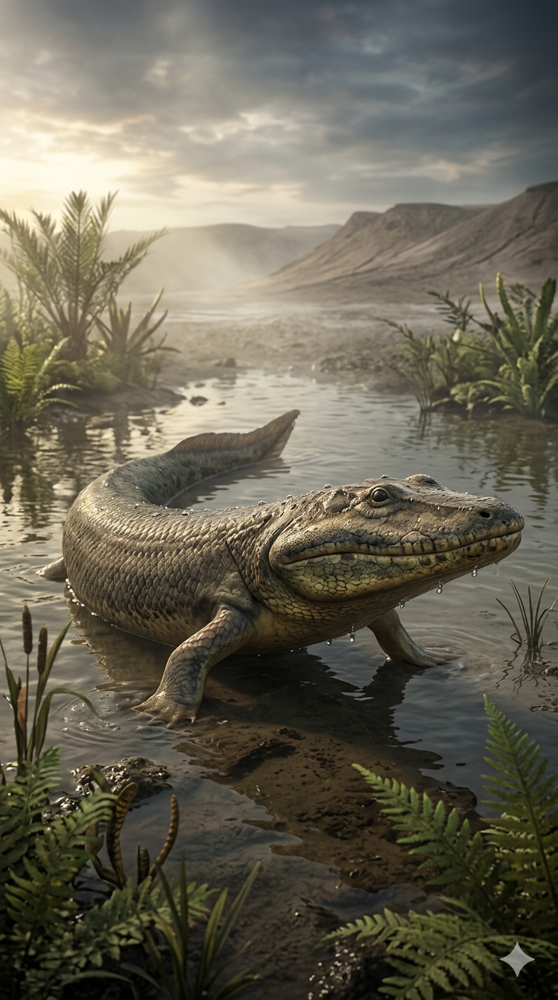
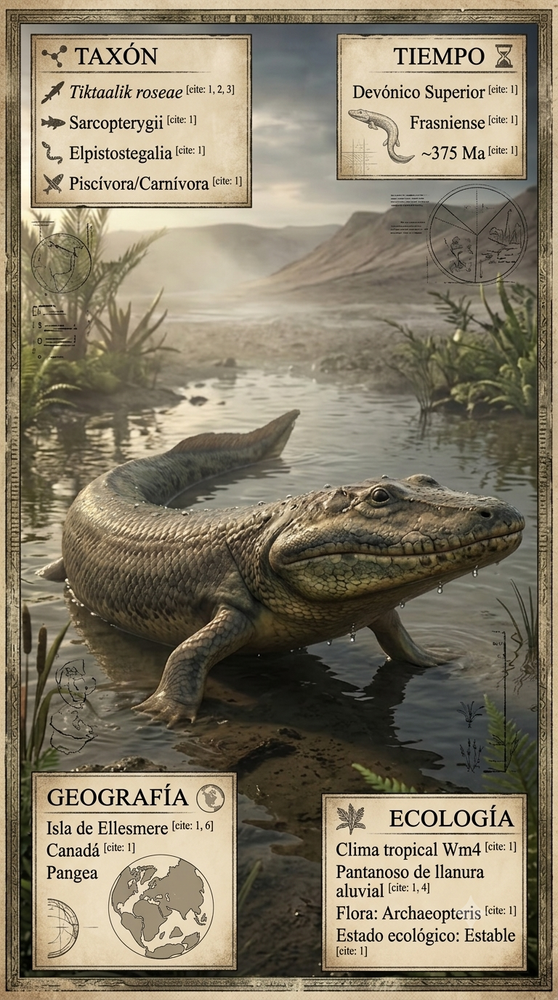
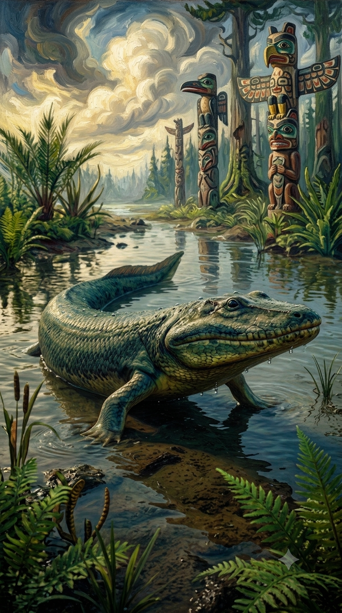
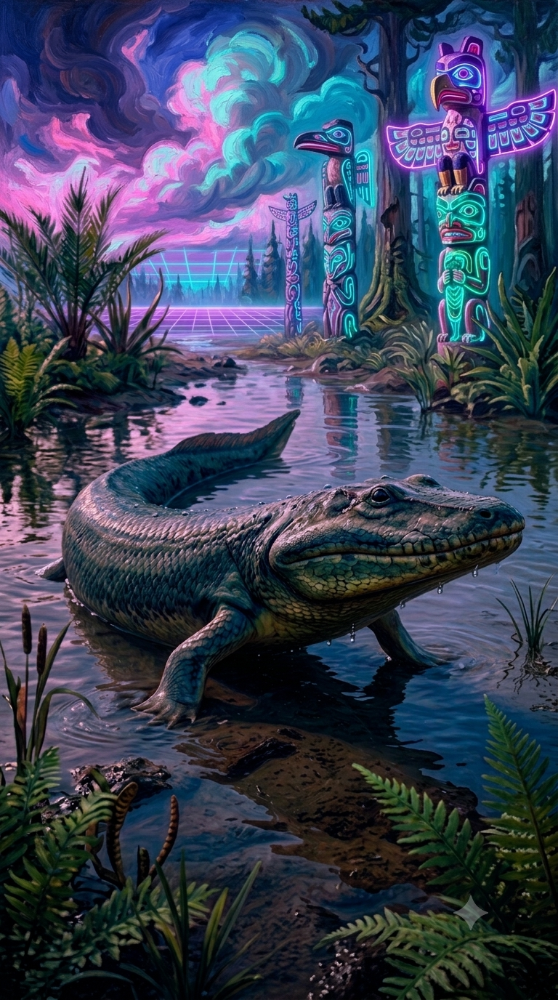

Paleoficha de Tiktaalik




Periodo: Devónico Superior (Frasniense)
Edad: Hace aproximadamente 375 millones de años.
Dieta: Piscívoro.
Distribución: Formación Fram, Isla Ellesmere (Nunavut, Canadá).
TAXÓN:
Tiktaalik roseae
CLADO:
Elpistostegalia (Sarcopterygii)
DIETA:
Piscívoro (depredador de aguas someras).
TAMAÑO:
Entre 1,5 y 3 metros de longitud.
LOCOMOCIÓN:
Semiacuática; aletas con estructura ósea articulada capaces de soportar parte del peso corporal sobre el sustrato.
TIEMPO:
Devónico Superior (Frasniense), hace aproximadamente 375 millones de años.
GEOGRAFÍA:
Formación Fram, Isla Ellesmere (Nunavut, Canadá).
EQUIVALENCIA PALEOGEOGRÁFICA:
Margen continental de Euramérica situado en latitudes ecuatoriales durante el Devónico.
AMBIENTE PALEOECOLÓGICO:
Ríos de corriente lenta, deltas y llanuras inundables tropicales.
ECOLOGÍA:
• Flora: Bosques primitivos de Archaeopteris y vegetación ribereña en expansión.
• Fauna secundaria: Sarcopterigios, placodermos y artrópodos de agua dulce.
• Nicho: Depredador de emboscada en aguas muy someras y márgenes fluviales.
• Relaciones: Competía con otros peces depredadores y constituye una de las formas transicionales más importantes entre los peces de aletas lobuladas y los primeros tetrápodos.
CLIMA:
Wm3 (Húmedo). Tropical, cálido y estacional, con abundante disponibilidad de agua.
ESTADO ECOLÓGICO:
Transicional. Tiktaalik representa una de las evidencias fósiles más importantes de la transición evolutiva hacia los vertebrados terrestres, mostrando adaptaciones tanto acuáticas como propias de la futura locomoción terrestre.
Vídeo PalEntropía:
▶ Ver Short en YouTube